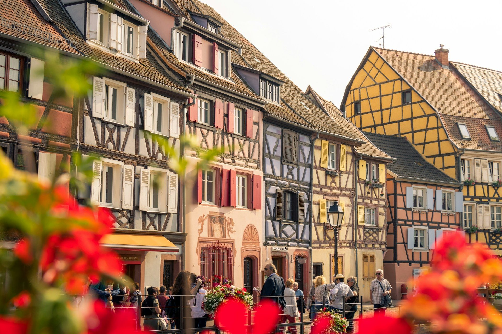

The Christmas markets of Alsace
Lit-up stalls, mulled wine and half-timbered villages: from late November to late December, Alsace is France’s Christmas region.
Photo: Patrick Robert Doyle / Unsplash
Alsace is the Christmas market region of France. Strasbourg, which calls itself the capital of Christmas, holds the country’s oldest market, while Colmar and the wine villages such as Kaysersberg and Riquewihr turn into a fairy-tale setting from late November.
Strasbourg and Colmar are half an hour apart by train, and Christmas shuttles link Colmar station to the nearby villages. Each guide gives the 2026 dates, opening hours, access and our tips for avoiding the busiest weekends.
Strasbourg

Colmar and the wine route
-
 Colmar
ColmarSix markets in the old town, illuminated Little Venice and a Ferris wheel, from 23 November to 29 December 2026.
-
 Kaysersberg
KaysersbergA craft market open only on the four Advent weekends, in one of the prettiest villages in Alsace.
-
 Riquewihr
RiquewihrAbout forty stalls in a fortified village among the vineyards, every day from 27 November to 20 December 2026.